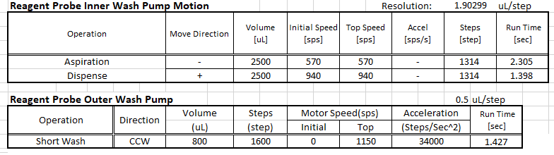
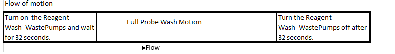

Full Reagent Probe Wash
This topic includes information about the theory of operation, or operating principles, for the full reagent probe wash.
Full Probe Wash Motion
Purpose
With this motion, only wash motions of reagent probes will be performed in 1 cycle. Carryovers will be able to be receded by transiting to reagent dispensing motions after this motion executed.
Motor Parameters

Motion
